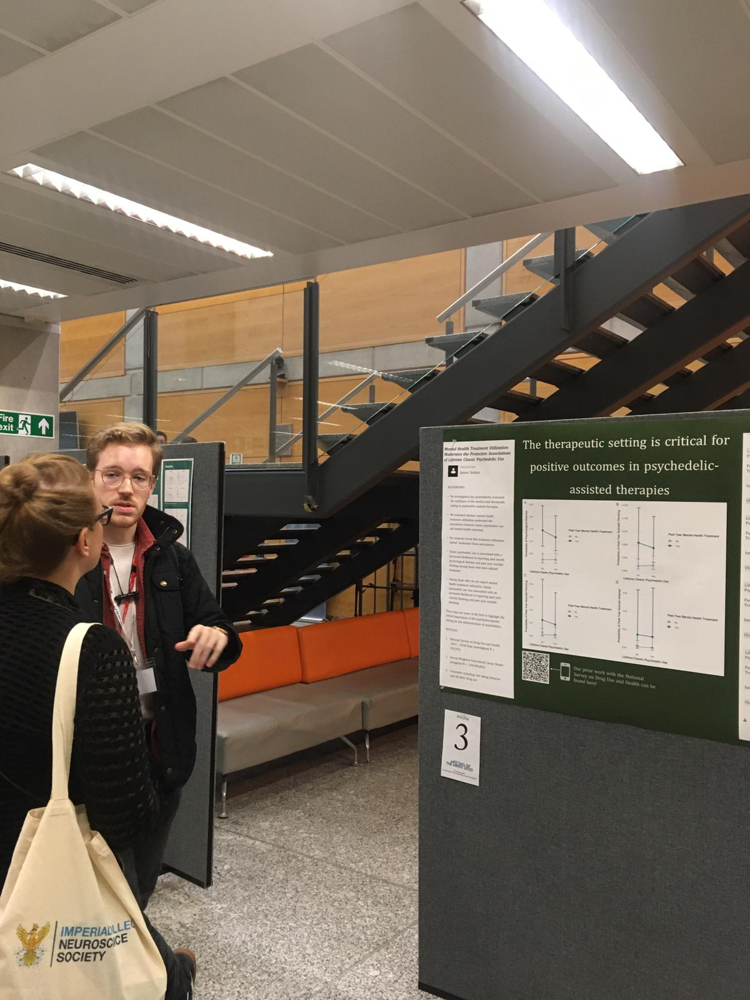

Academic Work
My most recent academic work comes from my time at Imperial College London working with the
Centre for Psychedelic Research.
While completing my Masters in Translational Neuroscience I worked on discovering the differential mechanisms
at play between traditional anti-depressant therapies (selective serotonin reuptake inhibitors)
and psilocybin, one of the leading candidates from the classical 5-HT2A receptor binding psychedelics.
This data came from the clinical study comparing the two treatment modalities in Major Depressive Disorder now published by my mentor Dr. Robin Carhart-Harris:
Trial of Psilocybin versus Escitalopram for Depression
Previous work had outlined what we should expect from longitudinal therapy with SSRI's but no long
term follow-up had been done with psilocybin and neuroimaging.
Did this class of drugs induce lasting
brain changes? Would these changes be associated with therapeutic effects? Where did the two treatments differ the most in
terms of brain connectivity? These were a few of the questions I wanted to answer in my research.
However, before any of these questions could be answered, the fMRI data had to be carefully inspected for noise, as motion can significantly disrupt statistical insights.
In addition to this challenge, one of the key issues with fMRI data preprocessing is reproducibility. Some of the best tools (arguably) are built in C++ and released as command-line packages
that require many pre-requisites and a strong knowledge of shell scripting. The Bourne shell was released initially in 1979! To make matters more complicated, each package is typically
very good at doing one thing but lacking in areas. For example, FSL is very good at brain extraction,
but not very good at registering the brain to a standard space (for comparison across subjects). I addressed this issue through the use of the NiPype package,
a Python framework built to automate and parallelize fMRI data processing while providing a way to make these command-line tools interoperable.
One of the benefits of this framework is the ability to interface with the UNIX based tools
and utilize the specific functions from each as you see fit. See the following example on the right hand side:
- Data is trimmed to remove the first few images considered "dummy scans"
- A de-spiking algorithm is used to remove and replace large spikes that are associated with movement in the scanner
- Slice time correction aligns each slice of the volume in time to account for scanner delay
- A motion correction algorithm detects motion and drift through the scan, saves the output for a noise regression later
Nipype creates a "Workflow" within which you connect "Nodes" representing each function you wish to carry out on your data. Below you can find the example code for the map shown on the right.
from nipype import Workflow, Node
from nipype.interfaces.fsl import ExtractROI # the trim function from FSL
from nipype.interfaces.afni import Despike, TShift, Volreg # despiking, slice time, and motion correction
fproc = Workflow(name='fproc') # the functional processing workflow
# ExtractROI - Extract ROI algorithm from FSL
trim = Node(ExtractROI(t_min=3, # get rid of the first three scans
t_size=scan_size, # define scan_size as your length of the scan (mine was 477)
output_type='NIFTI_GZ'), # define output format
name="trim")
# 3dDespike - despike algorithm from AFNI
despike = Node(Despike(outputtype='NIFTI_GZ', args='-NEW'),
name="despike")
fproc.connect([(trim, despike, [('roi_file', 'in_file')])]) # connect output of "trim" to input of "despike"
# 3dTshift - slice time correction from AFNI
slicetime = Node(TShift(outputtype='NIFTI_GZ',
tpattern='alt+z2'), # slice time pattern from my scanner
name="slicetime")
fproc.connect([(despike, slicetime, [('out_file', 'in_file')])]) # connect "despike" to "slicetime"
# 3dVolreg - correct motion and output 1d matrix from AFNI
moco = Node(Volreg(outputtype='NIFTI_GZ',
interp='Fourier', # fourier interpolation of motion
zpad=4, # zero pad space
args='-twopass'), # two pass the algorithm (costly but more accurate)
name="moco")
fproc.connect([(slicetime, moco, [('out_file', 'in_file')])]) # connect "slicetime" to motion correction
Nipype "Workflows" allow you to connect a series of "Nodes" - say specifically to process the functional images.
The framework also allows you connect multiple "Workflows", useful in the case that you'd like to
process functional images, but then register them to a standard space (e.g.,MNI).
In order for functional neuroimaging to become more clinically meaningful, open-source and reproducible pipelines are absolutely necessary.
For the full pipeline I created for the lab at Imperial, you can visit the repository on GitHub:
A publication from the data I worked with during my MSc can be found here:
Richard Daws, Christopher Timmerman, Bruna Giribaldi, James Sexton, Matthew Wall, David Erritzoe, Leor Roseman, David Nutt, Robin Carhart-Harrris Decreased brain modularity after psilocybin therapy for depression., 20 May 2021, PREPRINT (Version 1) available at Research Square.
Importance Psilocybin therapy shows antidepressant potential; our data link its antidepressant effects to decreased brain network modularity post-treatment.
Objective To assess the sub-acute impact of psilocybin on brain activity in patients with depression.
Design Pre vs post-treatment resting-state functional MRI (fMRI) was recorded in two trials: 1) Open-label treatment-resistant depression (TRD) trial with baseline vs 1 day post-treatment fMRI (April-2015 to April-2016); 2) Two-arm double-blind RCT in major depressive disorder (MDD), fMRI baseline vs 3 week after psilocybin-therapy or 6 weeks of daily escitalopram (January-2019 to March-2020).
Setting Study visits occurred at the NIHR Imperial Clinical Research Facility.
Participants Adult male and female patients with TRD or MDD.
Intervention(s) (for clinical trials) or Exposure(s) (for observational studies) Study 1: Two oral doses of psilocybin (10mg and 25mg, fixed order, 7 days apart). fMRI was recorded at baseline and one day after the 25mg dose. Study 2: either: 2 x 25mg oral psilocybin, 3 weeks apart, plus 6 weeks of daily placebo (‘psilocybin-arm’), or 2 x 1mg oral psilocybin, 3 weeks apart, plus 6 weeks of daily escitalopram [10-20mg] (‘escitalopram-arm’). fMRI was recorded at baseline and 3 weeks after the 2nd psilocybin dose, which was the final day of the 6-week daily capsule ingestion.
Main Outcome(s) and Measure(s) Beck Depression Inventory and fMRI network modularity.
Results Study 1: In 16 adults (mean age [SD], 42.8 [10.1] years, 4 [25%] female), psilocybin therapy was associated with markedly decreased BDI scores at 1 week (mean difference, -21; 95% CI=[-27.3, -14.7], P<.001) and 6 months (mean difference, -14.19; 95% CI=[-21.3, -7.1], P<.001). Decreased network modularity at one day post-treatment correlated with treatment response at 6 months (Pearson, 0.64; P=.01). Study 2: In 43 adults (42.7 [10.5] years, 14 [33%] female), antidepressant effects favoured the psilocybin-arm at 2 (mean difference, -8.76; 95% CI=[-13.6, -3.9], P=.002) and 6 weeks (mean difference, -8.78; 95% CI=[-15.6, -2.0], P=.01). Specific to the psilocybin-arm, improvements at the 6-week primary endpoint correlated with decreased network modularity (Pearson, -0.42, P=.025).
Conclusions and Relevance Consistent efficacy-related functional brain changes correlating with robust and reliable antidepressant effects across two studies suggest a candidate antidepressant mechanism for psilocybin therapy: decreased brain network modularity. Trial registration ClinicalTrials.gov identifier: NCT03429075